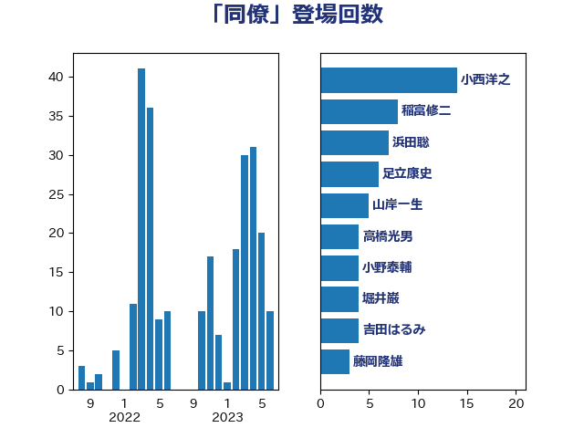

単語「同僚」

| 小西洋之 | 立憲民主党 | 14 回 |
| 稲富修二 | 立憲民主党 | 8 回 |
| 浜田聡 | NHK党 | 7 回 |
| 足立康史 | 日本維新の会 | 6 回 |
| 山岸一生 | 立憲民主党 | 5 回 |
| 高橋光男 | 公明党 | 4 回 |
| 小野泰輔 | 日本維新の会 | 4 回 |
| 堀井巌 | 自由民主党 | 4 回 |
| 吉田はるみ | 立憲民主党 | 4 回 |
| 藤岡隆雄 | 立憲民主党 | 3 回 |
| 美延映夫 | 日本維新の会 | 3 回 |
| 田村智子 | 日本共産党 | 3 回 |
| 生稲晃子 | 自由民主党 | 3 回 |
| 早稲田ゆき | 立憲民主党 | 3 回 |
| 斎藤アレックス | 国民民主党 | 3 回 |
| 小沼巧 | 立憲民主党 | 3 回 |
| 小倉將信 | 自由民主党 | 3 回 |
| 寺田学 | 立憲民主党 | 3 回 |
| 安江伸夫 | 公明党 | 3 回 |
| 吉田久美子 | 公明党 | 3 回 |
| 高橋千鶴子 | 日本共産党 | 2 回 |
| 進藤金日子 | 自由民主党 | 2 回 |
| 西田実仁 | 公明党 | 2 回 |
| 西村康稔 | 自由民主党 | 2 回 |
| 羽田次郎 | 立憲民主党 | 2 回 |
| 福島伸享 | 無所属 | 2 回 |
| 礒崎哲史 | 国民民主党 | 2 回 |
| 渡辺周 | 立憲民主党 | 2 回 |
| 榛葉賀津也 | 国民民主党 | 2 回 |
| 森屋隆 | 立憲民主党 | 2 回 |
| 杉尾秀哉 | 立憲民主党 | 2 回 |
| 有村治子 | 自由民主党 | 2 回 |
| 平木大作 | 公明党 | 2 回 |
| 川田龍平 | 立憲民主党 | 2 回 |
| 山下芳生 | 日本共産党 | 2 回 |
| 小沢雅仁 | 立憲民主党 | 2 回 |
| 奥野総一郎 | 立憲民主党 | 2 回 |
| 奥下剛光 | 日本維新の会 | 2 回 |
| 古賀千景 | 立憲民主党 | 2 回 |
| 倉林明子 | 日本共産党 | 2 回 |
| 保岡宏武 | 自由民主党 | 2 回 |
| 佐藤英道 | 公明党 | 2 回 |
| 下条みつ | 立憲民主党 | 2 回 |
| 三浦信祐 | 公明党 | 2 回 |
| 鷲尾英一郎 | 自由民主党 | 1 回 |
| 鶴保庸介 | 自由民主党 | 1 回 |
| 馬淵澄夫 | 立憲民主党 | 1 回 |
| 青島健太 | 日本維新の会 | 1 回 |
| 階猛 | 立憲民主党 | 1 回 |
| 長友慎治 | 国民民主党 | 1 回 |
| 鈴木隼人 | 自由民主党 | 1 回 |
| 鈴木義弘 | 国民民主党 | 1 回 |
| 鈴木敦 | 国民民主党 | 1 回 |
| 金田勝年 | 自由民主党 | 1 回 |
| 金村龍那 | 日本維新の会 | 1 回 |
| 野田佳彦 | 立憲民主党 | 1 回 |
| 重徳和彦 | 立憲民主党 | 1 回 |
| 里見隆治 | 公明党 | 1 回 |
| 遠藤敬 | 日本維新の会 | 1 回 |
| 逢坂誠二 | 立憲民主党 | 1 回 |
| 近藤昭一 | 立憲民主党 | 1 回 |
| 赤羽一嘉 | 公明党 | 1 回 |
| 赤木正幸 | 日本維新の会 | 1 回 |
| 西村智奈美 | 立憲民主党 | 1 回 |
| 荒井優 | 立憲民主党 | 1 回 |
| 若宮健嗣 | 自由民主党 | 1 回 |
| 舩後靖彦 | れいわ新選組 | 1 回 |
| 臼井正一 | 自由民主党 | 1 回 |
| 空本誠喜 | 日本維新の会 | 1 回 |
| 福重隆浩 | 公明党 | 1 回 |
| 福島みずほ | 社会民主党 | 1 回 |
| 神谷裕 | 立憲民主党 | 1 回 |
| 石橋林太郎 | 自由民主党 | 1 回 |
| 石垣のりこ | 立憲民主党 | 1 回 |
| 石井章 | 日本維新の会 | 1 回 |
| 石井拓 | 自由民主党 | 1 回 |
| 盛山正仁 | 自由民主党 | 1 回 |
| 田嶋要 | 立憲民主党 | 1 回 |
| 玄葉光一郎 | 立憲民主党 | 1 回 |
| 浅野哲 | 国民民主党 | 1 回 |
| 泉田裕彦 | 自由民主党 | 1 回 |
| 櫻井周 | 立憲民主党 | 1 回 |
| 森山裕 | 自由民主党 | 1 回 |
| 森山浩行 | 立憲民主党 | 1 回 |
| 梅谷守 | 立憲民主党 | 1 回 |
| 梅村聡 | 日本維新の会 | 1 回 |
| 松本尚 | 自由民主党 | 1 回 |
| 杉田水脈 | 自由民主党 | 1 回 |
| 杉本和巳 | 日本維新の会 | 1 回 |
| 本村伸子 | 日本共産党 | 1 回 |
| 末次精一 | 立憲民主党 | 1 回 |
| 末松義規 | 立憲民主党 | 1 回 |
| 新垣邦男 | 立憲民主党 | 1 回 |
| 斉藤鉄夫 | 公明党 | 1 回 |
| 後藤茂之 | 自由民主党 | 1 回 |
| 川崎ひでと | 自由民主党 | 1 回 |
| 岬麻紀 | 日本維新の会 | 1 回 |
| 岡本三成 | 公明党 | 1 回 |
| 山添拓 | 日本共産党 | 1 回 |
| 山本博司 | 公明党 | 1 回 |
| 山下貴司 | 自由民主党 | 1 回 |
| 小森卓郎 | 自由民主党 | 1 回 |
| 宮本岳志 | 日本共産党 | 1 回 |
| 宮崎勝 | 公明党 | 1 回 |
| 守島正 | 日本維新の会 | 1 回 |
| 大西健介 | 立憲民主党 | 1 回 |
| 塩村あやか | 立憲民主党 | 1 回 |
| 吉田統彦 | 立憲民主党 | 1 回 |
| 原口一博 | 立憲民主党 | 1 回 |
| 勝部賢志 | 立憲民主党 | 1 回 |
| 勝目康 | 自由民主党 | 1 回 |
| 加藤勝信 | 自由民主党 | 1 回 |
| 前原誠司 | 国民民主党 | 1 回 |
| 佐藤啓 | 自由民主党 | 1 回 |
| 住吉寛紀 | 日本維新の会 | 1 回 |
| 伴野豊 | 立憲民主党 | 1 回 |
| 伊藤渉 | 公明党 | 1 回 |
| 伊藤孝恵 | 国民民主党 | 1 回 |
| 伊佐進一 | 公明党 | 1 回 |
| 今枝宗一郎 | 自由民主党 | 1 回 |
| 仁比聡平 | 日本共産党 | 1 回 |
| 仁木博文 | 無所属 | 1 回 |
| 中野洋昌 | 公明党 | 1 回 |
| 中谷一馬 | 立憲民主党 | 1 回 |
| 中川正春 | 立憲民主党 | 1 回 |
| 中島克仁 | 立憲民主党 | 1 回 |
| 上田英俊 | 自由民主党 | 1 回 |
| 三木圭恵 | 日本維新の会 | 1 回 |
| 一谷勇一郎 | 日本維新の会 | 1 回 |
| こやり隆史 | 自由民主党 | 1 回 |
| おおつき紅葉 | 立憲民主党 | 1 回 |